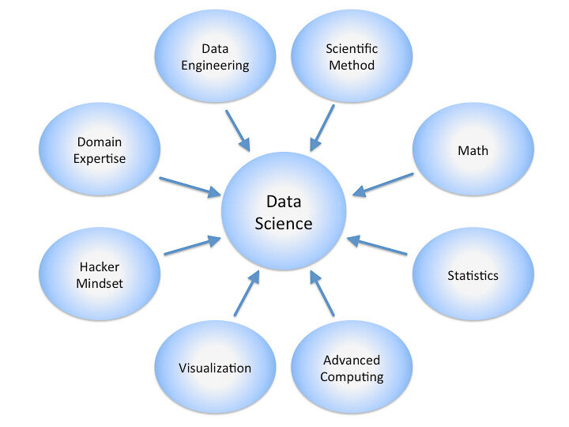

What profession did Harvard call the Sexiest Job of the 21st Century? That's right… the data scientist.
Ah yes, the ever mysterious data scientist. So what exactly is the data scientist's secret sauce, and what does this “sexy” person actually do at work every day?
This article is intended to help define the data scientist role, including typical skills, qualifications, education, experience, and responsibilities. This definition is somewhat loose since there really isn't a standardized definition of the data scientist role, and given that the ideal experience and skill set is relatively rare to find in one individual.
This definition can be further confused by the fact that there are other roles sometimes thought of as the same, but are often quite different. Some of these include data analyst, data engineer, and so on. More on that later.
Here is a diagram showing some of the common disciplines that a data scientist may draw upon. A data scientist's level of experience and knowledge in each, often varies along a scale ranging from beginner, to proficient, and to expert, in the ideal case.
While these, and other disciplines and areas of expertise (not shown here), are all characteristics of the data scientist role, I like to think of a data scientist's foundation as being based on four pillars. Other more specific areas of expertise can be derived from these pillars.
Let's discuss them now.
The Pillars Of Data Science Expertise